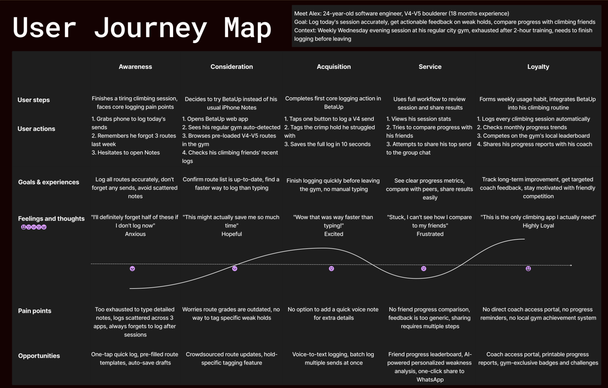
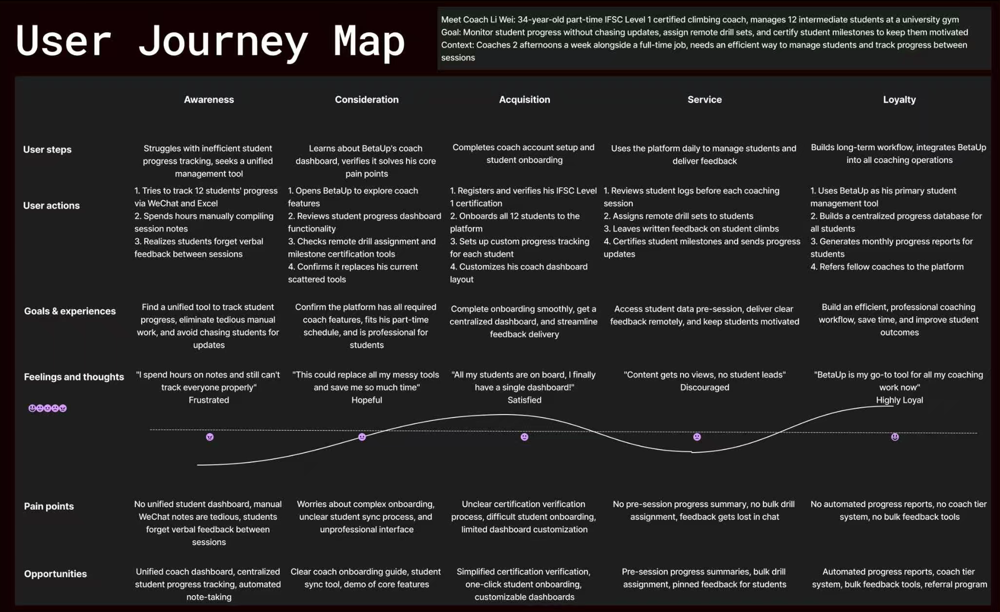
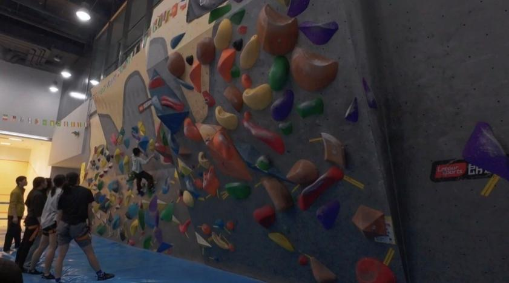
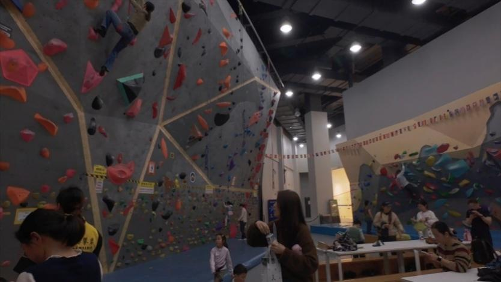

Gamified systems for climbers & coaches
XJTLU · CPT208 · GROUP C2-6 · SEMESTER 2 · 2025–2026
BetaUp is a human-centric application designed to enhance the experience of climbers and coaches through gamification, real-time feedback, and social connectivity.
Rooted in the Active Lifestyles theme of CPT208, our project explores how playful design principles can motivate climbers from beginner to advanced level, and help coaches deliver more engaging, data-driven guidance.
We apply a user-centred design process: conducting field research, building personas, prototyping iteratively, and evaluating with real users at climbing venues.
Understanding the problem space, the literature, existing tools, and the people we are designing for.
We chose rock climbing as our research focus because climbing uniquely combines physical challenge, technical skill, and social interaction. Unlike running or general fitness, climbing demands route-reading, movement planning, and mental composure — creating richer user needs around session logging, technique analysis, progress feedback, and community connection.
Since climbing's Olympic debut at Tokyo 2020, the sport has attracted a growing wave of younger participants. Yet the digital ecosystem still largely prioritises utility over experience — existing apps focus on training records or route databases, while fun, engagement, and playfulness remain underserved.
Several team members are regular gym climbers at XJTLU's campus wall. We found ourselves juggling multiple apps, spreadsheets, and WeChat group chats for what should be one coherent experience — log a send, celebrate progress, get coach feedback, and find routes nearby. BetaUp was built from that frustration, filling the gap between pure utility and genuinely playful daily engagement.
| Paper | 3 Strengths | 3 Gaps |
|---|---|---|
| BoulderPlay: Exploring AR and Vibrotactile Integration for Novel Bouldering Experiences SportsHCI 2025 |
|
|
| Embedding and Generation of Indoor Climbing Routes with Variational Autoencoder arXiv 2020 |
|
|
| Wearable and Non-Invasive Sensors for Rock Climbing Applications Sensors 2023 |
|
|
| Computer Vision Based Indoor Rock Climbing Analysis UCSD Technical Report 2022 |
|
|
| Product | 3 Strengths | 3 Gaps |
|---|---|---|
|
Vertical-Life Training / Logbook / Topo vertical-life.info |
|
|
|
27 Crags Outdoor Guide / Route Discovery 27crags.com |
|
|
|
KAYA Social + Gym Guide + Challenges kayaclimb.com |
|
|
|
Mountain Project Route Database / Community Guide mountainproject.com |
|
|
All four products skew heavily towards utility — they help users climb better, find routes, or manage training data. None delivers a persistent, intrinsically enjoyable daily experience. The common pattern: engagement either depends on external events (challenges, competitions) or collapses once the immediate task is done. BetaUp targets this gap directly — placing gamification, social playfulness, and voice-first interaction at the core so every session feels like an achievement worth opening the app for.
A visual user journey, three must-have playful features, and evidence from field research with real climbers.
This user journey map depicts the full end-to-end usage experience of BetaUp's primary user, amateur bouldering climber Alex Chen. Following 5 core experience stages including pre-session awareness, function consideration, platform operation, daily service use and long-term user retention, the record systematically sorts out Alex's practical operation behaviours, real training demands, emotional changes and existing pain points in daily climbing log management. It clearly shows the bottlenecks in traditional climbing record modes, such as cumbersome manual typing, scattered multi-app data storage, difficult peer progress comparison and incomplete long-term growth tracking. Meanwhile, it correspondingly matches targeted platform optimisation opportunities, verifying how BetaUp solves real user distress throughout the whole climbing cycle, and constructing a smooth, low-friction whole-process training experience for individual climbers.

This journey map sorts out the complete business workflow of BetaUp's secondary user, part-time professional climbing coach Li Wei. In accordance with the full cycle from daily management distress awareness, platform function understanding, account permission onboarding, routine teaching service execution to long-term tool stickiness cultivation, it analyses the coach's actual working behaviours, professional management needs, emotional fluctuations and industry pain points under the dual pressure of daily job and part-time teaching. The content reflects the widespread shortcomings of traditional coach-student management methods, including scattered student data, inefficient manual statistics, delayed remote feedback and lack of standardised milestone certification. Combined with matching platform functional opportunities, it demonstrates how BetaUp builds a closed, efficient professional teaching management system, realising digital, lightweight and systematic student progress management for climbing coaches.

We conducted on-site observations and face-to-face interviews with regular climbers at local Suzhou indoor bouldering gyms. Participants matched our core persona Alex Chen — intermediate V3–V5 climbers with long-term training habits who struggled with fragmented logging tools.


Rapid ideation sketches, design alternatives considered, and how we chose our final direction.
Manual form entry is easy to implement but unsuitable mid-climb when hands are occupied. We chose an AI voice assistant — powered by STT and DeepSeek LLM — as the primary hands-free input method. Beyond voice, we also built a BLE heart rate monitoring demo that connects to an Apple Watch or compatible wearable, streaming real-time biometric data into the session view. This demonstrates our vision for deeper hardware integration and quantified training feedback.
The simple web version has many limited functions in actual use, lacking the function of taking photos and notifications, and considering that almost no one climbs with a laptop, we finally chose Flutter for its cross-platform capabilities.
Compared with the clear medal acquisition mechanism, although the random reward box has a sense of surprise, it may not meet the expectations of some users. Additionally, considering that our project is a sports project, there is more motivation with specific goals, so we finally choose the plan of upgrading medals and experience points.
Early-stage Figma prototype covering key user flows: Onboarding → Home → Record Session → Badge Wall → Community → Profile. Click-through prototype validated with 3 users before development began.
View Low-Fidelity Prototype →Full-stack architecture, technology choices, live deployment, and individual team contributions.
The full-stack system (Spring Boot API + Flutter web build) deployed to a public URL for live demonstration and usability testing.
| Member | Role | Contributions |
|---|---|---|
|
Cao Yuhan
曹雨涵 · 2360894
Lead Developer
|
Full Stack Engineering |
System architecture
Backend development
Frontend development
Database design
UI/UX design
Questionnaire
|
|
Yang Renyu
杨仁雨 · 2360772
User Research
|
Research & Discovery |
User interviews
Persona & journey map
Literature review
Questionnaire design
Poster design
|
|
Chen Zixi
陈子熹 · 2362352
UI / UX Design
|
Design & Prototype |
Lo-fi & hi-fi prototype
Visual design system
Concept sketches
Frontend development
Database schema review
|
|
Yang Mengxi
杨梦溪 · 2364303
Media & Research
|
Media & Research |
Poster design
Demo video
Interviews & survey
Evaluation report
Concept design
|
System Usability Scale scores, qualitative findings, and iterative improvements driven by user feedback.
Three participants tested the Alpha version on Chrome in a think-aloud session (~15 min each). Tasks included: creating an account, logging a climb, viewing badges, posting to community, and using the voice assistant.
How we used large language model tools, what we generated, how we verified it, and the ethical considerations.
Used for: Spring Boot API scaffolding (controller, service, repository layers), Flutter screen component generation, JWT authentication boilerplate, database schema design, DeepSeek system prompt engineering, and the voice assistant pipeline — including the VoiceService state machine, DeepSeekClient HTTP wrapper, and the custom CustomPainter panda widget.
Used as: The NLP engine inside the voice assistant, parsing natural-language Chinese climbing commands into structured JSON actions — LOG_CLIMB, START_SESSION, END_SESSION, and QUERY_STATS — with typed parameters (grade, venue, result, attempts, notes).
All AI-generated UI components were checked for contrast ratios (minimum 4.5:1 for body text). The voice assistant is a supplementary input method — every voice action is also reachable via touch UI, so the app remains fully usable for users in noisy environments or with speech difficulties.
The DeepSeek NLP model performs better on Chinese commands due to its training data distribution. We document this limitation clearly: non-Chinese speakers may experience lower voice recognition accuracy. A future iteration would support English commands equally.
No voice audio is stored by BetaUp. Transcribed text is sent to DeepSeek's API for NLP processing; users are informed of this via the microphone permissions dialogue before first use. All session and climb data is stored only in our local H2 database instance.
AI-generated code was reviewed, understood, and in many cases refactored by the lead developer before integration. We do not submit AI output as-is. The developer is responsible for correctness, security (JWT, SQL safety), and alignment with user requirements.